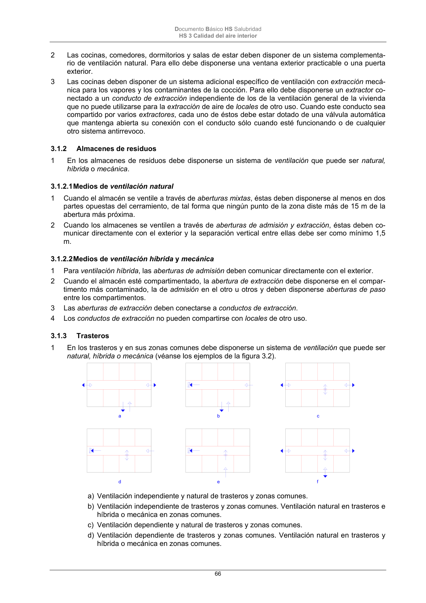

DB-HS · 3.1.2.2 Medios de ventilación híbrida y mecánica · versión 2022-06-14 · capa oficial
Formatos: JSON compacto · Markdown · PDF fuente
Ámbito del documento · texto del ámbito · documento y tablas
ID técnico a0146 · PDF pág. 66-67 · jerarquía no validada por persona · contrastado con el literal de la página 66 (candidato tipográfico); no validado por persona · padre: raíz
3.1.2.2 Medios de ventilación híbrida y mecánica 1 Para ventilación híbrida, las aberturas de admisión deben comunicar directamente con el exterior. 2 Cuando el almacén esté compartimentado, la abertura de extracción debe disponerse en el compar- timento más contaminado, la de admisión en el otro u otros y deben disponerse aberturas de paso entre los compartimentos. 3 Las aberturas de extracción deben conectarse a conductos de extracción. 4 Los conductos de extracción no pueden compartirse con locales de otro uso. 3.1.3 Trasteros 1 En los trasteros y en sus zonas comunes debe disponerse un sistema de ventilación que puede ser natural, híbrida o mecánica (véanse los ejemplos de la figura 3.2). a b c d e f a) Ventilación independiente y natural de trasteros y zonas comunes. b) Ventilación independiente de trasteros y zonas comunes. Ventilación natural en trasteros e híbrida o mecánica en zonas comunes. c) Ventilación dependiente y natural de trasteros y zonas comunes. d) Ventilación dependiente de trasteros y zonas comunes. Ventilación natural en trasteros y híbrida o mecánica en zonas comunes. Documento Básico HS Salubridad HS 3 Calidad del aire interior 67 e) Ventilación dependiente e híbrida o mecánica de trasteros y zonas comunes. f) Ventilación dependiente y natural de trasteros y zonas comunes. abertura de admisión abertura mixta abertura de extracción aberturas de paso conducto de extracción Figura 3.2 Ejemplos de tipos de ventilación en trasteros 3.1.3.1 Medios de ventilación natural 1 Deben disponerse aberturas mixtas en la zona común al menos en dos partes opuestas del cerra- miento, de tal forma que ningún punto de la zona diste más de 15 m de la abertura más próxima. 2 Cuando los trasteros se ventilen a través de la zona común, la partición situada entre cada trastero y esta zona debe disponer al menos de dos aberturas de paso separadas verticalmente 1,5 m como mínimo. 3 Cuando los trasteros se ventilen independientemente de la zona común a través de sus aberturas de admisión y extracción, estas deben comunicar directamente con el exteriory la separación vertical entre ellas debe ser como mínimo 1,5 m. 3.1.3.2 Medios de ventilación híbrida y mecánica 1 Cuando los trasteros se ventilen a través de la zona común, la extracción debe situarse en la zona común. Las particiones situadas entre esta zona y los trasteros deben disponer de aberturas de pa- so. 2 Las aberturas de admisión de los trasteros deben comunicar directamente con el exteriorylas aber- turas de extracción deben estar conectadas a un conducto de extracción. 3 Para ventilación híbrida las aberturas de admisión deben comunicar directamente con el exterior. 4 Las aberturas de extracción deben conectarse a conductos de extracción 5 En las zonas comunes las aberturas de admisión y las de extracción deben disponerse de tal forma que ningún punto del local diste más de 15 m de la abertura más próxima. 6 Las aberturas de paso de cada trastero deben separarse verticalmente 1,5 m como mínimo. 3.1.4 Aparcamientos y garajes de cualquier tipo de edificio 1 En los aparcamientos y garajes debe disponerseun sistema de ventilación que puede ser natural o mecánica. 3.1.4.1 Medios de ventilación natural 1 Deben disponerse aberturas mixtas al menos en dos zonas opuestas de la fachada de tal forma que su reparto sea uniforme y que la distancia a lo largo del recorrido mínimo libre de obstáculos entre cualquier punto del local y la abertura más próxima a él sea como máximo igual a 25 m. Si la dis- tancia entre las aberturas opuestas más próximas es mayor que 30 m debe disponerse otra equidis- tante de ambas, permitiéndose una tolerancia del 5%. 2 En el caso de garajes que no excedan de cinco plazas ni de 100 m2 útiles, en vez de las aberturas mixtas, pueden disponerse una o varias aberturas de admisión que comuniquen directamente con el exterior en la parte inferior de un cerramiento y una o varias aberturas de extracción que comuni- quen directamente con el exterior en la parte superior del mismo cerramiento, separadas vertical- mente como mínimo 1,5 m.

PDF fuente redistribuible: copia fiel enlazada en esta página (SHA256 verificado).